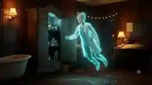

Arthur — Thực thể
- Thực thể duy nhất nhìn thấy linh hồn Lauren
- Tương tác vật lý, đẩy/mở cửa
- Lén lút (Stealth)
- Đọc bản vẽ
- Lái xe
HÌNH TƯỢNG ARTHUR & LAUREN · CHÂN THẬT (REALSTIC) · THÀNH PHỐ SƯƠNG MỜ & THẾ GIỚI TÂM LINH
phím tương tác, switch nhân vật, đọc bản vẽ/ký ức, phasing, dùng vật phẩm
Arthur: Tương tác vật lý, đẩy/mở cửa, lén lút (Stealth), đọc bản vẽ, lái xe
Lauren dạng người: Tương tác vật lý, đẩy/mở cửa, lén lút (Stealth), đọc bản vẽ, lái xe
Lauren: Đi xuyên tường (Phasing), phát sáng (Emissive Glow), làm nhiễu thiết bị điện, soi ký ức

Tương tác vật lý, đẩy/mở cửa, lén lút (Stealth), đọc bản vẽ, lái xe
CĂN HỘ VICTORIAN → PHÁT HIỆN LINH HỒN LAUREN → HÀNH TRÌNH BẢO VỆ THỂ XÁC & GIẢI MÃ TAI NẠN → LÉN LÚT KHÁM PHÁ BỆNH VIỆN & SUTTER STREET → HÉ LỘ BÍ MẬT QUÁ KHỨ → ĐỐI DIỆN QUYẾT ĐỊNH SINH TỬ (72H).
ARTHUR (THỰC THỂ DUY NHẤT NHÌN THẤY LINH HỒN) & LAUREN (THỰC THỂ TÂM LINH BÁN TRONG SUỐT)
Câu chuyện diễn ra tại San Francisco sương mù. Người chơi luân phiên vào vai Arthur và linh hồn Lauren thực hiện hành trình giải mã bí ẩn vụ tai nạn tại Sutter Street, đồng thời từng bước chạy đua với thời gian để cứu Lauren trước khi bị rút thiết bị duy trì sự sống.
Russian Hill Apartment
Memorial Hospital - Phòng 712
Sutter Street & Ký Ức
Carmel Beach House
Chuyển Hướng Sinh Tử
Căn hộ Victorian, Bệnh viện Memorial lạnh, Phố sương mờ San Francisco, Bờ biển Carmel
Russian Hill Apartment, Memorial Hospital (Phòng 712), Sutter Street, Carmel Beach House
Vụ va chạm xe bí ẩn vào một đêm sương mờ tại giao lộ Sutter St, khiến bác sĩ tập sự Lauren rơi vào trạng thái hôn mê sâu tại Bệnh viện Memorial.
Đây không phải tai nạn ngẫu nhiên mà liên quan đến một manh mối bị che giấu trong tài liệu y khoa.
Dự án thiết kế đô thị lớn mà Arthur từng đảm nhận. Các bản vẽ kỹ thuật của dự án này chứa đựng chìa khóa và sơ đồ kiến trúc bị ẩn giấu, liên kết trực tiếp với hiện trường tai nạn.
Căn hộ kiến trúc Victorian tại Russian Hill vốn là nơi ở của Lauren trước tai nạn, sau đó được Arthur thuê lại. Sự giao thoa không gian này trở thành "cổng kết nối" đầu tiên giữa Arthur và linh hồn Lauren.
Thực tại ấm áp & hoài niệm:Khu phố Russian Hill với các căn hộ nhà gỗ Victorian cổ điển, đường dốc sương mù, đại diện cho ký ức và sự kết nối cảm xúc.
Thực tại lạnh lẽo & vô trùng: Hệ thống Bệnh viện Memorial hiện đại, quản lý nghiêm ngặt bởi quy trình y tế khắt khe và lực lượng an ninh gác đêm.
Hội đồng y khoa Bệnh viện Memorial đưa ra thời hạn 72 giờ trước khi tiến hành hội chẩn tháo thiết bị duy trì sự sống của Lauren.
Y tố xã hội này tạo nên động lực và áp lực thời gian (Time-pressure) đè nặng lên mọi hành động của Arthur.
Linh hồn Lauren không thể tồn tại vô hạn định. Phạm vi di chuyển của cô bị giới hạn xung quanh Arthur hoặc thể xác tại bệnh viện.
Tăng lên khi hai người giải mã thành công ký ức hoặc củng cố niềm tin; giảm đi khi gặp căng thẳng hoặc cãi vã. Chỉ số này mở rộng bán kính di chuyển và năng lượng xuyên vật thể cho Lauren.
Các di vật cá nhân (chùm chìa khóa, ống nghe y tế, bản vẽ cũ) tích tụ năng lượng cảm xúc quá khứ. Khi Lauren lại gần, các di vật này sẽ phát sáng và kích hoạt phân cảnh hồi tưởng (Flashback).
Ranh giới giữa sự sống và cái chết không phải một bức tường, mà là một đồng hồ đếm ngược tâm linh. Khi đồng hồ chạm mốc 0, thể xác tháo máy thở, linh hồn Lauren sẽ tan biến hoàn toàn thành các hạt năng lượng.
| Địa điểm (Map Location) | Bầu không khí (Visual Vibe) | Cơ chế Gameplay chính | Vai trò Cốt truyện |
|---|---|---|---|
| 1. Căn hộ Victorian (Russian Hill) | Ấm áp, tông màu nâu cam Tweed, ánh sáng đèn vàng dịu nhẹ. | Tutorial chuyển đổi nhân vật; Arthur di chuyển đồ đạc, Lauren xuyên tường tìm chìa khóa. | Điểm khởi đầu; Arthur phát hiện sự tồn tại của linh hồn Lauren. |
| 2. Bệnh viện Memorial (Phòng 712) | Xám lạnh vô trùng (Clinical Grey), đèn huỳnh quang nhấp nháy. | Lén lút (Stealth) tránh bảo vệ; Lauren làm nhiễu camera & khóa điện tử để Arthur đột nhập. | Bảo vệ thể xác Lauren khỏi nguy cơ tháo máy thở. |
| 3. Sutter Street | Sương mù đặc quánh, đèn đường vàng khuếch tán, hiện trường vụ án. | Điều tra góc nhìn đôi; Lauren soi vết máu/dấu vết ẩn, Arthur giải đố hiện trường. | Thu thập mảnh ghép quá khứ và tìm nguyên nhân tai nạn. |
| 4. Carmel Beach House | Bờ biển lộng gió, hoàng hôn tím cam, không gian mở tĩnh lặng. | Giải đố tâm lý; củng cố Chỉ số Hy Vọng (Hope Level) lên mức tối đa. | Nơi nghỉ ngơi lắng đọng, thấu hiểu tình cảm sâu sắc giữa hai nhân vật. |
Nhiệm vụ:Khám phá căn hộ, làm quen với cơ chế nhìn thấy linh hồn và điều khiển song song.
Nhiệm vụ:Đột nhập bệnh viện đêm gác; bảo vệ thể xác Lauren trước đợt kiểm tra y tế đột xuất.
Nhiệm vụ Truy vết vụ tai nạn trong đêm sương mù; đối chiếu bản vẽ Victory với hiện trường thực tế.
Nhiệm vụ:Tìm lại kỷ vật bị lãng quên; hồi phục năng lượng linh hồn chuẩn bị cho trận chạy đua cuối.
Nhiệm vụ:Tổng lực thâm nhập phòng cấp cứu cao cấp; đưa ra lựa chọn nhánh (Branching Choices) quyết định Lauren tỉnh lại hay tan biến.